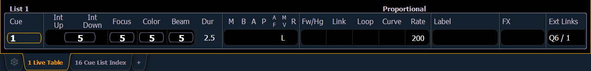

When in Live or Blind, if you press [Live] or [Blind] respectively, the selected cue will be the last executed cue. This cue will appear on the command line.
When working in Live, the selected cue is always the last cue you recorded, edited, updated or played back. When entering Blind for cues, the selected cue will be selected and displayed. Changing the selected cue in Blind will cause the playback status display to change as well, unless preserve blind cue has been enabled in Setup, which will not synchronize the Blind display to the currently selected cue but rather shows the last cue selected in Blind. When you return to Live, the selected cue is synchronized to the currently active cue.
The attributes of the selected cue (such as timing, attributes, label and external links) are shown at the bottom of the Live / Blind display.

To load a new cue to the pending file of the playback fader, press [Cue] [#] [Load]. When the [Go] button is pressed, the activated cue will be the selected cue.
For Example:
Assume you have cue list 1 already loaded to the master playback faders. Now you want to load cue 2/1 to a fader.
If you press the [Load] button above the master playback fader, it will load cue 2/1 into the pending file. You could also press the [Load] button above any other playback fader to load the cue into that fader’s pending file.
In this example, the last cue executed from cue list 1 is still the active cue, while cue 2/1 is pending. When [Go] is pressed, 2/1 will be executed.
You can also load cue list 2 by pressing [Cue] [2] [/] [Load]. This will load the first cue of list 2 into pending.
The selected cue is changed by go, record, or update instructions as well as cue modification and selecting a cue on the command line. When you execute a cue that has a follow or hang time, the next cue will become the selected cue when activated.
While in Blind, changing the selected cue will change the playback status display to show information surrounding that cue.
CAUTION: When editing in blind, changes to cues are automatically stored, therefore no update or record command is required.
While working in blind mode, cues can be executed in live using [Go], [Stop/Back], and [Go to Cue], but this does not change the cue you are working with in blind.